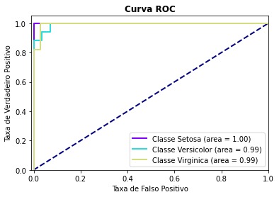

Este componente realiza predições usando um modelo Multi-layer Perceptron para classificação usando Scikit-learn. Scikit-learn é uma biblioteca open source de machine learning que suporta apredizado supervisionado e não supervisionado. Também provê várias ferramentas para ajustes de modelos, pré-processamento de dados, seleção e avaliação de modelos, além de outras funcionalidades.
Espera-se como entrada para o componente uma tabela com colunas que representam valores numéricos, categóricos ou de data. Os valores de data devem ser removidos ou selecionados para codificação ordinal para que o modelo consiga processá-los. A tabela deve ser de um dos seguintes tipos: Comma-separated values (.csv) ou Excel (.xls, .xlsx).
A seguir são listados todos os parâmetros utilizados pelo componente:
- Atributo alvo:
feature(Obrigatório).
Seu modelo será treinado para prever os valores do alvo. - Modo de seleção das features:
string, {"incluir","remover"}, padrão:"remover".
Se deseja informar quais features deseja incluir no modelo, selecione a opção ‘incluir'. Caso deseje informar as features que não devem ser utilizadas, selecione ‘remover'. - Features para incluir/remover no modelo:
feature.
Seu modelo será feito considerando apenas as features selecionadas. Caso nada seja especificado, todas as features serão utilizadas. - Features para fazer codificação ordinal:
feature.
Seu modelo utilizará a codificação ordinal para as features selecionadas. As demais features categóricas serão codificadas utilizando One-Hot-Encoding. - Camada Oculta:
integer, padrão:100.
O i-ésimo elemento representa o número de neurônios na i-ésima camada oculta. - Ativação:
string, {"identity","logistic","tanh","relu"}, padrão:"relu".
Função de ativação para as camadas ocultas. - Solucionador:
string, {"lbfgs","sgd","adam"}, padrão:"adam".
Solucionador de otimização de peso. - Taxa de Aprendizado:
string, {"constant","invscaling","adaptive"}, padrão:"constant".
Programação da taxa de aprendizado para atualização de peso. - Iteração:
integer, padrão:200.
Número máximo de iterações. - Embaralhamento:
boolean, {True,False}, padrão:True.
Se as amostras devem ser embaralhadas em cada iteração. Usado somendo quando solver tiver ‘sgd' ou ‘adam' como valor. - Método de Predição:
string, {"predict_proba","predict"}, padrão:"predict_proba".
Se optar por ‘predict_proba', o método de predição será a probabilidade estimada de cada classe, já o ‘predict' prediz a qual classe pertence. - Gráficos a serem ignorados:
string, {"Dados de Teste","Matriz de Confusão","Métricas Comuns","Curva HOC","Tabelas de Dados"}.
Considerando a quantidade de gráficos que são retornados ao executar a experimentação, o usuário pode selecionar quais ele não deseja visualizar.
As métricas de performance tem o propósito de ajudar o usuário a avaliar a performance do modelo. Essas métricas variam de acordo com o tipo de problema, tal como: classificação, regressão, agrupamento, entre outros.
- Acurácia: Indica uma performance geral do modelo. Dentre todas as classificações, quantas o modelo classificou corretamente.
- Recall: Dentre todas as situações de classe positivo como valor esperado, quantas estão corretas.
- F1-Score: Média harmônica entre precisão e recall.
- Suporte: Número de ocorrências de cada classe esperadas
- Matriz de confusão: Tabela que mostra as frequências de classificação para cada classe do modelo
O retorno durante a experimentação ajuda o usuário a analisar tanto métricas distintas de forma visual, como a distribuição dos dados e os dados brutos ao final da execução. Sendo assim, é possível visualizar diversos retornos para este componente como os listados a seguir:
- Dados de teste
Apresenta a distribuição dos dados de teste considerando as duas características mais relevantes para o modelo.
- Matriz de confusão
Apresenta a matriz de confusão. Cada linha representa uma classe e cada coluna representa a classe predita pelo modelo. Assim, é possível observar relações entre os acertos e erros para cada classe. Na diagonal temos o caso em que a classe predita acertou a classe real.
- Métricas comuns
Apresenta métricas comuns utilizadas para avaliar modelos de classificação, como por exemplo: precision e recall. - Curva ROC
Apresenta um gráfico da Curva ROC. Esse gráfico permite avaliar a performance de um classificador binário para diferentes pontos de cortes. A métrica AUC (Area under curve) também é calculada e indicada na legenda do gráfico. Se a variável resposta tiver mais de duas categorias, o cálculo da curva ROC e AUC é feito utilizando o algoritmo one-vs-rest, ou seja, calcula-se a curva ROC e AUC de cada classe em relação ao restante. - Tabela dos dados
Apresenta visualização dos dados após o treinamento do modelo com a variável resposta e dados sobre o modelo.
O retorno durante a implantação se refere a tabela com os valores preditos para o atributo alvo. Sendo que, cada linha da tabela se refere a um registro enviado ao modelo.